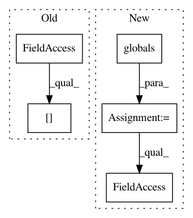

0f65b0232077bf3f00fa4405d7412094dfd2a33a,lib/tests/streamlit/watcher/LocalSourcesWatcher_test.py,LocalSourcesWatcherTest,setUp,#LocalSourcesWatcherTest#,46
Before Change
class LocalSourcesWatcherTest(unittest.TestCase):
def setUp(self):
try:
del sys.modules[DUMMY_MODULE_1.__name__]
except:
pass
try:
After Change
"DUMMY_MODULE_1", "DUMMY_MODULE_2", "MISBEHAVED_MODULE",
]
the_globals = globals()
for name in modules:
try:
del sys.modules[the_globals[name].__name__]
except:
pass
In pattern: SUPERPATTERN
Frequency: 3
Non-data size: 5
Instances
Project Name: streamlit/streamlit
Commit Name: 0f65b0232077bf3f00fa4405d7412094dfd2a33a
Time: 2019-07-02
Author: thiago@streamlit.io
File Name: lib/tests/streamlit/watcher/LocalSourcesWatcher_test.py
Class Name: LocalSourcesWatcherTest
Method Name: setUp
Project Name: PyMVPA/PyMVPA
Commit Name: caecc91c2fb5f980024208a7600c006e0c80b5aa
Time: 2009-02-09
Author: debian@onerussian.com
File Name: mvpa/support/copy.py
Class Name:
Method Name:
Project Name: streamlit/streamlit
Commit Name: 59ca2fde6950e736520e40461c24bba9e13adaa9
Time: 2019-06-21
Author: thiago@streamlit.io
File Name: lib/tests/streamlit/watcher/LocalSourcesWatcher_test.py
Class Name: LocalSourcesWatcherTest
Method Name: setUp